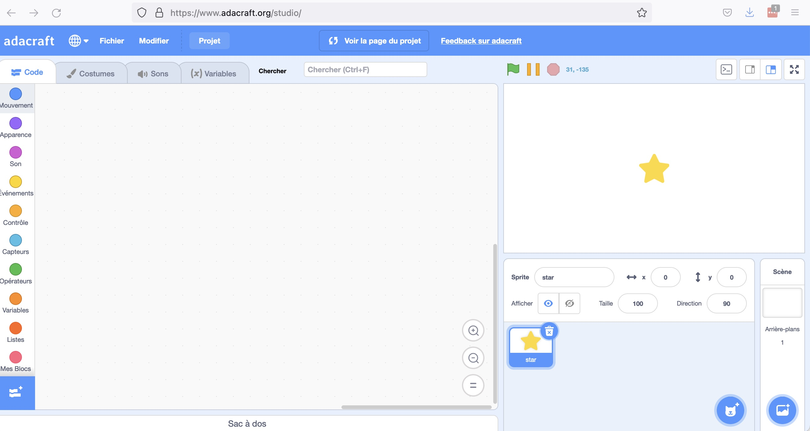

5. Contrôle du FetchBot avec Scratch¶
Objectif: Faire déplacer le FetchBot avec Scratch.
Âge |
10 à 14 ans |
Notions abordées |
Robotique, programmation avec Scratch, condition, boucle. |
Durée |
4 heures |
Dispositif pédagogiques |
Par groupe de 2 |
Matériel |
Un FetchBot, Un laptop/tablette par groupe de 2, avec connexion à Internet |
Prérequis |
1. Connaissances de bases de Scratch (voir Activité 2 - Reconnaissance d’images avec Scratch) |
5.1. Aperçu¶
5.2. Adacraft¶
Cette activité utilise Adacraft, qui est une version modifiée de Scratch incluant une extension permettant de communiquer avec le rover. L’extension s’appelle ‘CloudLink’, et te permettra de te connecter au rover, et de lui envoyer des messages pour le faire avancer, tourner, ou reculer.
5.3. Créer un projet Adacraft¶
Rends-toi sur le site d’Adacraft: https://www.adacraft.org, puis clique sur ‘Create’ en haut à gauche.

Si tu n’es pas inscrit, un message apparaîtra t’informant que ton travail ne pourra pas être sauvegardé. Il est intéressant de t’inscrire sur le site (en cliquant sur ‘Sign up’) pour pouvoir sauvegarder tes programmes. Si tu souhaites juste tester l’interface, clique sur ‘Start creating without online saving’. Tu pourras dans tous les cas sauvegarder ton travail en le téléchargeant sur ton ordinateur.
Une fois ce message validé, tu arriveras sur l’interface du studio dans lequel tu pourras créer tes programmes.
{kind=link}
Tu peux choisir la langue en cliquant sur l’icône de planète en haut à gauche.
5.4. Connexion au rover¶
La connexion au rover se fera grâce au système CloudLink, qui permet à Scratch d’envoyer des messages au rover.
{kind=link}
5.4.1. Lancer le serveur CloudLink¶
Pour que le rover puisse recevoir les messages, il faut lancer le programme Python start_cloudlink.py. Le programme se trouve dans le répertoire ‘tools/cloudlink’ du dépôt GitHub. Pour le lancer, ouvre un terminal de commande, puis va dans le répertoire ‘fetchbot-fr/tools/cloudlink’ avec la commande
cd fetchbot-fr/tools/cloudlink
Note
Si le répertoire n’existe pas, c’est que les fichiers du dépôt Github se trouvent dans un autre répertoire que celui donné en exemple lors de la copie du dépôt GitHub. Remplace le répertoire fetchbot-fr par celui où les fichier ont été téléchargés.
Lance ensuite le script start_cloudlink.py avec la commande python
python start_cloudlink.py
5.4.2. Connexion au rover dans Adacraft¶
Pour te connecter au rover dans Adacraft, tu auras besoin de l’extension Cloudlink. Pour y accéder, il faut cliquer sur l’icône en bas à gauche ‘Ajouter une extension’. Ceci t’amènera à une page avec toutes les extensions disponibles. Descend dans la page pour trouver l’extension ‘Cloudlink’ et clique dessus. Tu pourras voir l’extension dans la zone d’instructions.
Le bloc pour se connecter au rover avec CloudLink est dans la catégorie ‘CloudLink’, et s’appelle “Connect to ws://127.0.0.1:3000”. Sélectionne le et place le dans la zone du programme.
{kind=link}
5.5. Faire avancer le rover¶
Le pilotage du rover se fait avec le bloc ‘Send command cmd id val’ dans la catégorie CloudLink. Il s’agit du dernier bloc de la catégorie. Pour faire avance le rover, il faut remplacer ‘cmd’ par ‘direct’, et ‘val’ par ‘forward’ (qui signifier ‘avancer’ en anglais).
Place le bloc sous celui de la connexion, et ajoute un drapeau de démarrage du programme.
{kind=link}
5.5.1. Tester le code¶
Remarque : Avant d’exécuter le code, allume la batterie. Remarque : place ton robot sur un support de manière à ce que les moteurs ne touchent pas le sol. Tu ne veux pas que ton robot tombe du bureau !
Tu es maintenant prêt à exécuter le code. Clique sur le drapeau vert au dessus de la scène. Si tu constates que le code ne s’exécute pas correctement, il se peut qu’il y ait une erreur dans le code que tu as tapé.
Tu devrais maintenant voir les deux moteurs tourner en avant en même temps pendant une demie seconde. Si un seul moteur tourne, vérifie ton câblage. Si l’un des moteurs tourne en arrière, intervertis les fils rouge et noir de ce moteur dans le bornier. Continue à tester le code jusqu’à ce que les fils soient à la bonne place.
5.6. Faire tourner le rover¶
Pour faire tourner le robot, utilise le même bloc que pour le faire avancer, mais au lieu d’envoyer la valeur ‘forward’, tu envoies
La valeur ‘left’ pour tourner à gauche

La valeur ‘right’ pour tourner à droite
{kind=link}
5.7. Pour aller plus loin¶
Tu sais maintenant comment faire avancer ou tourner le FetchBot. Expérimente avec différents parcours. Pourrais-tu faire le code qui permettrait au robot de faire un itinéraire en forme de carré?